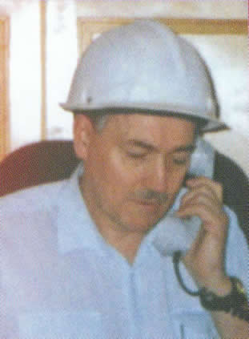
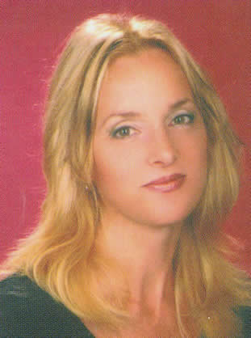
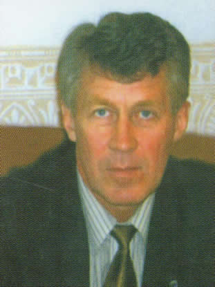

|  | ЗАДИРАКА ГЕОРГИЙ НИКОЛАЕВИЧГенеральный директор - АОр (народного предприятия) "Знамя", уже более 20 лет возглавляет предприятие. Окончил Донецкий политехнический институт по специальности инженер-электрик. Прошел путь от электрослесаря, начальника электроцеха до генерального директора. Его практический опыт инженера-электрика и знание органических недостатков, присущих системе управления "сверху - вниз", побудило искать новые пути. В настоящее время Задирака Г.Н. является активным участником и вице-президентом Российского Союза народных предприятий (РСНП), автором ряда публикаций по энергосбережению и совершенствованию организации производства и управления. |
ЗИМИНА ТАТЬЯНА ВИКТОРОВНАДоктор экономических наук, ведущий научный сотрудник Института экономики Уральского отделения Российской академии наук. С 1989 года занимается проблемами собственности работников, имеет опыт практического внедрения культуры собственности работников на предприятиях. Является автором ряда публикаций по собственности работников. |
 |
|  | КОНОВАЛОВ АЛЕКСАНДР АЛЕКСАНДРОВИЧГенеральный директор ЗАО(р) "Туринский целлюлозно-бумажный завод". Получил образование инженера-электрика в Красноярском политехническом институте. С 1969 г. начал работу на Туринском ЦБЗ. В 1995 г. общим собранием был выбран Генеральным директором ОАО "Туринский ЦБЗ". "Случайное знакомство" с концепцией собственности работников, защищающей интересы трудового коллектива и предприятие в целом, вызвало желание развивать бизнес на её основе. В 2004 г. избран председателем Союза акционерных обществ работников (народных предприятий) Урала. |
Участники 23 семинара - совещания АОр (народных предприятий) 18 марта 2016г